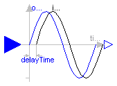

This package contains delay components.
This package is not part of the Modelica standard library.
Release Notes:
Copyright © 2001-2002, DLR.
The ModelicaAdditions.Blocks.Nonlinear package is free software; it can be redistributed and/or modified under the terms of the Modelica license, see the license conditions and the accompanying disclaimer in the documentation of package Modelica in file "Modelica/package.mo".

The Input signal is delayed by a given time instant, or more precisely:
y = u(time - delayTime) for time > time.start + delayTime
= u(time.start) for time <= time.start + delayTime
| Name | Default | Description |
|---|---|---|
| delayTime | 1 | Delay time of output with respect to input signal [s] |
block FixedDelay "Delay block with fixed DelayTime" extends Modelica.Blocks.Interfaces.SISO; parameter SI.Time delayTime=1 "Delay time of output with respect to input signal"; equation y = delay(u, delayTime); end FixedDelay;

The Input signal is delayed by a given time instant, or more precisely:
y = u(time - delayTime) for time > time.start + delayTime
= u(time.start) for time <= time.start + delayTime
The delay is approximated by a Pade approximation, i.e., by
a transfer function
b[1]*s^m + b[2]*s^[m-1] + ... + b[m+1]
y(s) = --------------------------------------------- * u(s)
a[1]*s^n + a[2]*s^[n-1] + ... + a[n+1]
where the coefficients b[:] and a[:] are calculated such that the
coefficients of the Taylor expansion of the delay exp(-T*s) around s=0
are identical upto order n+m.
The main advantage of this approach is that the delay is
approximated by a linear differential equation system, which
is continuous and continuously differentiable. For example, it
is uncritical to linearize a system containing a Pade-approximated
delay.
The standard text book version uses order "m=n", which is
also the default setting of this block. The setting
"m=n-1" may yield a better approximation in certain cases.
Literature:
Otto Foellinger: Regelungstechnik, 8. Auflage,
chapter 11.9, page 412-414, Huethig Verlag Heidelberg, 1994
| Name | Default | Description |
|---|---|---|
| delayTime | 1 | Delay time of output with respect to input signal [s] |
| n | 1 | Order of pade approximation |
| m | n | Order of numerator |
block PadeDelay
"Pade approximation of delay block with fixed DelayTime "
extends Modelica.Blocks.Interfaces.SISO;
parameter SI.Time delayTime=1 "Delay time of output with respect to input signal";
parameter Integer n(min=1) = 1 "Order of pade approximation";
parameter Integer m(
min=1,
max=n) = n "Order of numerator";
protected
Real x1dot "Derivative of first state of TransferFcn";
Real xn "Highest order state of TransferFcn";
Real a[n + 1];
Real b[m + 1];
public
final output Real x[n]
"State of transfer function from controller canonical form";
protected
function padeCoefficients
input Real T "delay time";
input Integer n "order of denominator";
input Integer m "order of numerator";
output Real b[m + 1] "numerator coefficients of transfer function";
output Real a[n + 1] "denominator coefficients of transfer function";
protected
Real nm;
algorithm
a[1] := 1;
b[1] := 1;
nm := n + m;
for i in 1:n loop
a[i + 1] := a[i]*(T*((n - i + 1)/(nm - i + 1))/i);
if i <= m then
b[i + 1] := -b[i]*(T*((m - i + 1)/(nm - i + 1))/i);
end if;
end for;
b := b[m + 1:-1:1];
a := a[n + 1:-1:1];
end padeCoefficients;
equation
(b,a) = padeCoefficients(delayTime, n, m);
[der(x); xn] = [x1dot; x];
[u] = transpose([a])*[x1dot; x];
[y] = transpose([zeros(n - m, 1); b])*[x1dot; x];
initial equation
x[n] = inPort.signal[1];
end PadeDelay;
ModelicaAdditions.Blocks.Nonlinear.VarDelay

The Input signal is delayed by a given time instant, or more precisely:
y = u(time - delayTime) for time > time.start + delayTime
= u(time.start) for time <= time.start + delayTime
where delayTime is an additional input signal which must follow
the following relationship:
0 <= delayTime <= delayMax.
| Name | Default | Description |
|---|---|---|
| delayMax | 1 | maximum delay time |
block VarDelay "Delay block with variable DelayTime" extends Modelica.Blocks.Interfaces.SISO; parameter Real delayMax(min=0) = 1 "maximum delay time"; Modelica.Blocks.Interfaces.InPort delayTime(final n=1); equation y = delay(u, delayTime.signal[1], delayMax); end VarDelay;